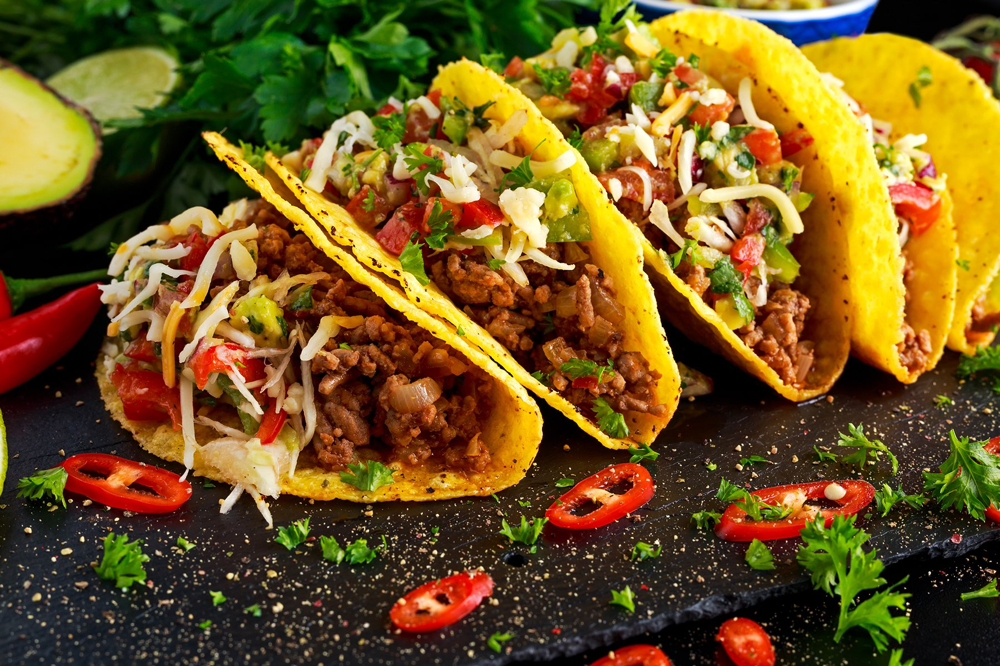

Ingredients
- 8 small tortillas
- 1 can black beans, drained
- 1 cup corn
- 1 avocado, diced
- 1 tomato, diced
- 1/2 cup shredded cheese
- Sour cream and salsa for serving
Instructions
- Warm tortillas in a pan.
- In a bowl, mix black beans, corn, avocado, and tomato.
- Place the mixture on each tortilla and top with cheese.
- Serve with sour cream and salsa.
Back to Recipes